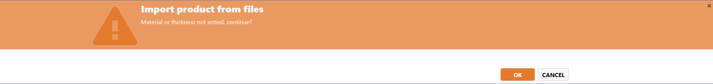
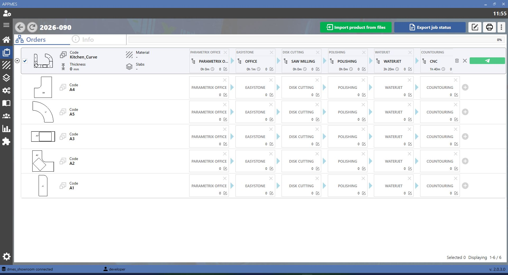
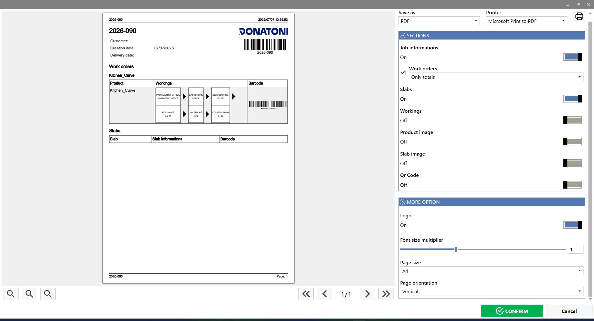
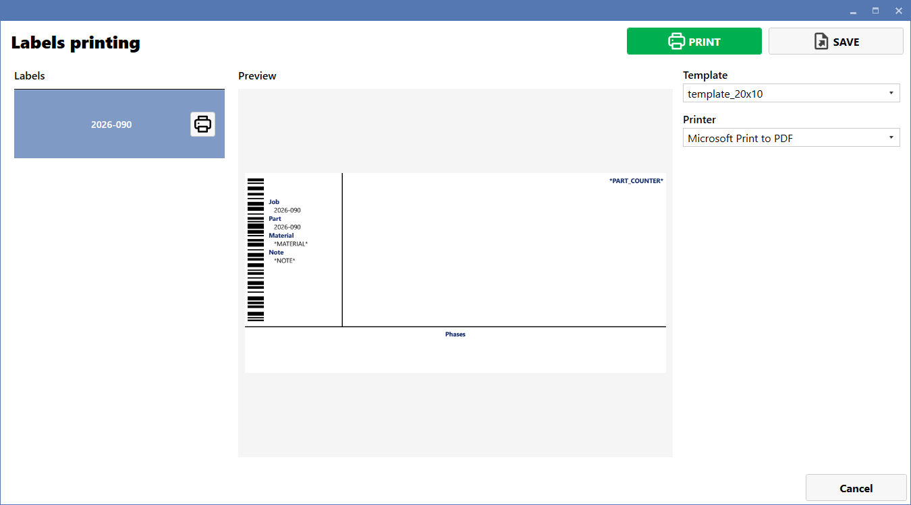
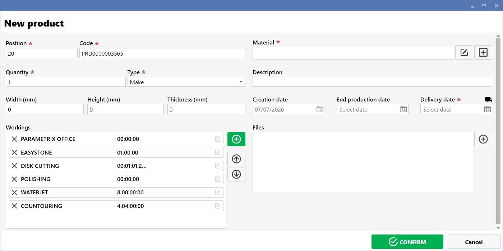

In questa pagina è possibile gestire tutte le fasi di lavorazione dei pezzi all’interno del MES. Il MES è il software che permette di seguire l’avanzamento della produzione, dalla creazione o importazione dei pezzi fino alla stampa delle etichette e all’invio in produzione

PULSANTI
Import | |
 | Export |
 | Menu opzioni |
 | Modifica |
 | Stampa |
 | Invio |
STATI DELLA LAVORAZIONE
Verde | Indica che la fase di lavorazione è stata completata |
Azzurro | Indica che la fase di lavorazione deve ancora iniziare |
Giallo | Indica che la fase di lavorazione è stata presa in carico ed è in gestione |
IMPORTAZIONE PEZZI
Per importare i pezzi, fare clic sul pulsante Import. Si aprirà una schermata simile a quella mostrata di seguito.

Premere OK nella schermata successiva. Al termine, verificare che tutti i pezzi siano stati aggiunti correttamente alla lavorazione.


ESPORTAZIONE DEGLI STATI DI LAVORO
Per esportare gli stati di una lavorazione, premere il pulsante Export. Si aprirà una schermata simile a quella mostrata di seguito, nella quale è possibile scegliere o modificare le informazioni da esportare

STAMPA ETICHETTE
Per stampare un’etichetta per l’intera lavorazione, premere il pulsante Stampa. Si aprirà una schermata simile a quella mostrata di seguito.

STAMPA ETICHETTE PER UNA FASE DI UNA LAVORAZIONE
Per stampare un’etichetta per una singola fase di lavorazione, fare clic con il tasto destro del mouse sulla fase desiderata e selezionare la voce Labels printing. Si aprirà una schermata simile a quella mostrata di seguito. Selezionare quindi il pezzo per cui si vuole stampare l’etichetta

NUOVO PRODOTTO
Per aggiungere un nuovo prodotto alla lavorazione, fare clic sui tre puntini e selezionare la voce New product. Si aprirà una schermata simile a quella mostrata di seguito.

PULSANTI NUOVO PRODOTTO
Aggiungi | |
 | Sposta sopra |
Sposta sotto |